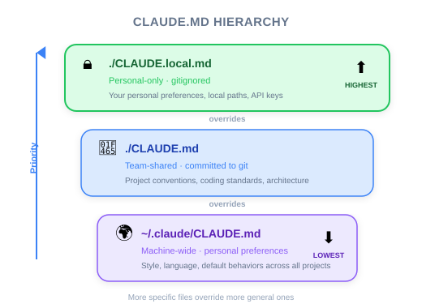
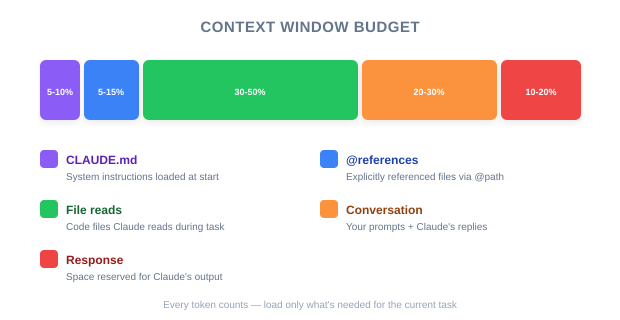

| Item | Details |
|---|---|
| Exam Coverage | D3 — Effective Claude Code Usage (30%), D5 — Performance Optimization (12%) |
| Task Statements | 3.1 ★★★ (CLAUDE.md hierarchy), 5.1 ★★ (context preservation), 5.4 ★★ (large codebase context) |
| Exam Scenarios | S2 (Code Gen), S4 (Developer Productivity) |
| Course Source | claude-code-in-action / 02-getting-started / Lesson 07 (video + text) |
Claude Code manages project context through a three-tier configuration file system (CLAUDE.md). /init generates the initial file by analyzing the codebase. Three levels exist — global (all projects), project (shared via repo), and local (personal overrides). The @ syntax lets developers point Claude at specific files. For PMs: this is how teams standardize AI-assisted development across an organization, and how context window budget is managed.
/init + CLAUDE.md means new team members' AI assistant already knows the project architecture from day one.| Concept | Business Analogy |
|---|---|
| CLAUDE.md hierarchy | Company policy levels: corporate policy (global) < department policy (project) < individual exceptions (local). More specific overrides more general. |
/init command |
Employee onboarding — read all documentation, understand the org, summarize key processes |
@ file mentions in CLAUDE.md |
Standing meeting agenda items — always on the table, always discussed |
Interactive @ mentions |
Ad-hoc meeting topics — brought up only when relevant |
# memory command |
Updating the team wiki — persistent knowledge that survives personnel changes |

| Phase | Action | CLAUDE.md Lever |
|---|---|---|
| 1. Initial setup | Tech lead runs /init on the main repo |
Generates baseline CLAUDE.md with project architecture |
| 2. Standardize | Tech lead adds coding standards, PR conventions, test requirements to CLAUDE.md | All developers inherit same rules via source control |
| 3. Personalize | Individual developers create CLAUDE.local.md for personal preferences | Personal style without affecting team standards |
| 4. Optimize | Team removes low-value @ references from CLAUDE.md after monitoring context usage |
Better performance, lower token costs |
🎬 Instructor insight from the video
The instructor shows that CLAUDE.md is "included in every request" — making it essentially a persistent system prompt. For PMs, this means the CLAUDE.md is the single most impactful configuration for controlling AI behavior across the team.
| Content Type | Where to Put It | Why |
|---|---|---|
| Project architecture, build commands | ./CLAUDE.md (project) |
Every developer needs this; version-controlled |
| Coding standards, PR conventions | ./CLAUDE.md (project) |
Team consistency; changes tracked in git |
| Personal coding style preferences | ~/.claude/CLAUDE.md (global) |
Applies to all your projects; not shared |
| Experimental directives, personal API keys | ./CLAUDE.local.md (local) |
Per-project overrides; not committed |
| Schema files, API contracts | @ reference in ./CLAUDE.md |
Cross-cutting context needed on most requests |
| Task-specific files | Interactive @ in chat |
One-time context; does not waste context window |
💡 PM Decision Rule
If it affects the whole team, it goes in project CLAUDE.md. If it is personal, it goes in local or global. If you are unsure, ask: "Would a new team member need this?" If yes, project CLAUDE.md.

PMs should understand this trade-off because it affects both performance and cost:
| More context in CLAUDE.md | Less context in CLAUDE.md |
|---|---|
| Claude always knows project details | Claude may need to discover files each time |
| Higher token consumption per request | Lower token consumption per request |
| Risk of degraded response quality | Better reasoning with focused context |
| Faster for repeated questions | Slightly slower for first-time exploration |
The sweet spot: put cross-cutting, frequently needed files in CLAUDE.md @ references. Let Claude discover everything else through its tools.
Your CTO asks: "How do we ensure all 50 developers using Claude Code follow our coding standards?" Which approach is correct?
A developer reports: "Claude Code used to be fast but now it is slow and gives worse answers." Investigation reveals they added 12 @ file references to CLAUDE.md last week. What do you recommend?
@ references and move non-essential ones to interactive @ mentions; keep only cross-cutting files in CLAUDE.mdA new developer joins your team. They have never used Claude Code. What is the fastest path to productive AI-assisted development on your project?
/init to generate a fresh CLAUDE.md